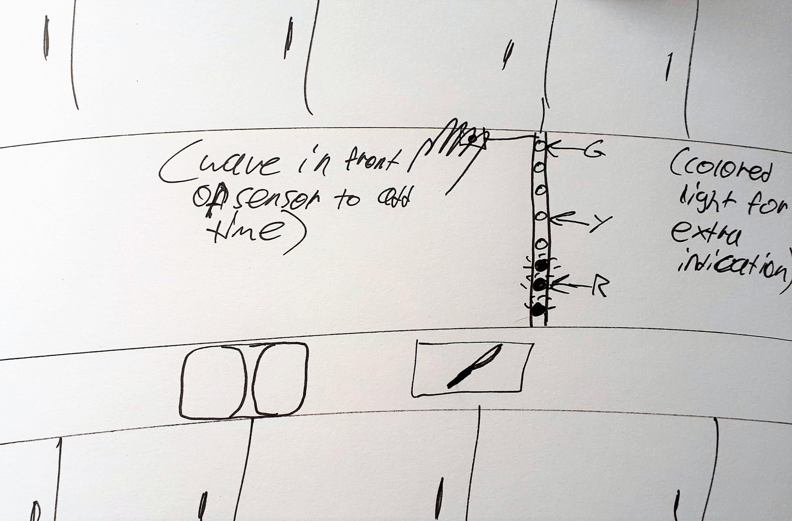

The Good Ideas
|
|
|
|
The Not As Good Ideas
|
We decided to implement Michaela's initial idea, the handsfree kitchen timer. These refined designs are all functionally the same with respect to the timer. We decided that each LED represents a 5-minute time increment, and it fades as that time passes. Motion or sound is used to activate these designs, usually waving in front of it or clapping or snapping. When the time runs out, the lights go off, and a buzzer goes off.
MeThe countdown is shaped like a clock, where each LED light is 5 minutes. This is an intuitive and easy to read shape. The motion detector in the middle starts activating the lights one by one, and every 5 minutes it disappears. The second design is the same technicalities, but the shape is different using the Golden Ratio, starting from the center going out. I think the value of this design is that it conveys urgency as time slowly runs out through increasing LED proximity. |
|
MichaelaSimilar clock-based design, a LED light strip that is mounted on the wall, multiple LED designs wit ha colander for the base. |
|
MaxWheel-based design that has LEDs on the sides. Strip of counting LEDs but set around an oven. |
|
AaronLights surrounding a wine box with containers underneath. A snake-like grid that slowly increments on time based on waving. |
 |
JackyLights surrounding a wine box with containers underneath. A snake-like grid that slowly increments on time based on waving. |
We made the following. To use this, you have to make a sound above a certain threshold (a clap will work well) in order to increment the time by one five-minute increment. If you wave your hand over the motion, which requires being closer to it, the time is incremented by 5 five-minute increments, so 25 minutes.
The LED lights transition through the rainbow to show progress, and each LED fades out every five minutes. When time is up, a buzzer vibrates.
Hence we have two inputs: sound and motion; and two outputs: light and sound.
I tested and setup the buzzer activation, ideated and found materials for the shape, tested sound thresholds and fine-tuned them to pick up claps and reduce LED lag, and filmed the demo video.
 HADIYA FIRDAUS
HADIYA FIRDAUS